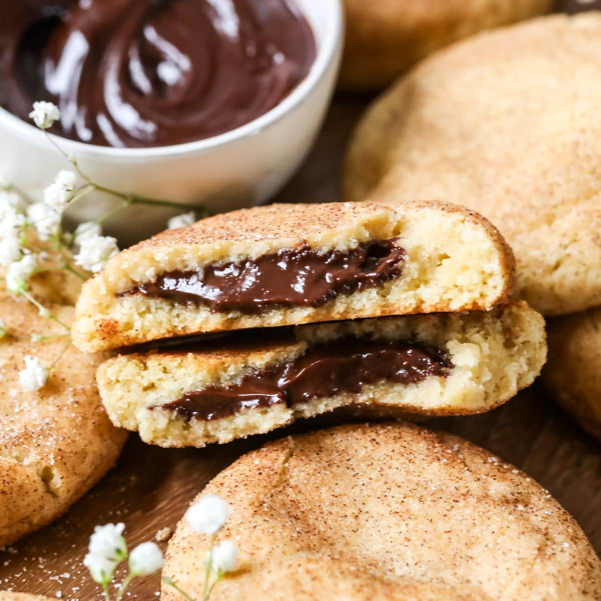

Churro Cookies

Ingredients
Cinnamon Sugar Coating
- ½ cup granulated sugar
- 1 tablespoon ground cinnamon
Cookie Dough
- 2 cups all-purpose flour
- 1 teaspoon baking powder
- ½ teaspoon salt
- ¾ cup unsalted butter
- ¾ cup granulated sugar
- 1 egg
- 1 teaspoon vanilla extract
- 1 teaspoon ground cinnamon
Instructions
Cinnamon Sugar Coating
- Mix coating: Combine granulated sugar and ground cinnamon in a small bowl.
- Set aside.
Cookie Dough
- Preheat oven: Set oven to 350°F (175°C) and line baking sheets with parchment paper.
- Combine dry ingredients: In a bowl whisk together flour, baking powder, cinnamon, and salt.
- Cream butter and sugars: Beat butter and sugar until fluffy.
- Add egg and vanilla.
- Combine mixtures: Slowly add dry ingredients and mix until dough forms.
- Shape cookies: Roll dough into balls and coat in cinnamon sugar mixture.
- Bake: Bake cookies for 10–12 minutes until lightly golden.
- Cool: Let cookies cool slightly before serving.
🗨